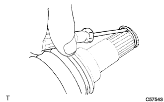
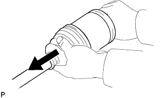
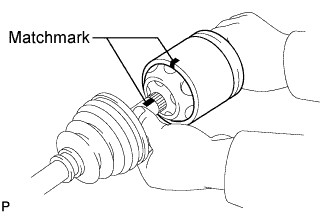
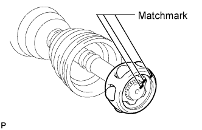
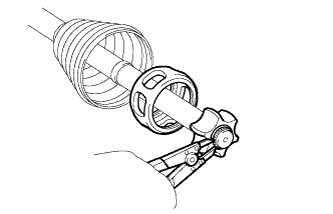
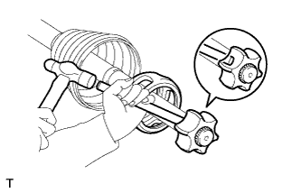
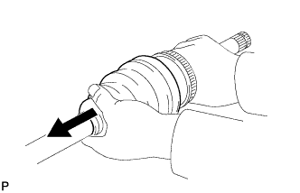
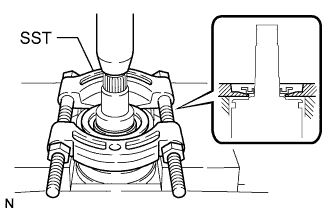

FRONT DRIVE SHAFT ASSEMBLY > DISASSEMBLY |
| 1. REMOVE FRONT AXLE INBOARD JOINT SET SETTING SHAFT SNAP RING |
 |
Using a screwdriver, remove the snap ring from the inboard joint shaft.
| 2. REMOVE FRONT NO. 2 AXLE INBOARD JOINT BOOT SETTING CLAMP |
Using a side cutter, cut the inboard joint boot setting clamp and remove it.
| 3. REMOVE FRONT NO. 1 AXLE INBOARD JOINT BOOT SETTING CLAMP |
Using a side cutter, cut the inboard joint boot setting clamp and remove it.
| 4. DISCONNECT FRONT AXLE INBOARD JOINT BOOT |
 |
Disconnect the inboard joint boot from the inboard joint shaft.
| 5. REMOVE FRONT AXLE INBOARD JOINT SHAFT |
 |
Place matchmarks on the inboard joint shaft and outboard joint shaft.
Using a screwdriver, remove the snap ring from the inboard joint shaft.
Remove the inboard joint shaft from the outboard joint shaft.
 |
Place matchmarks on the outboard joint shaft, inner race and cage.
Remove the 6 balls.
Slide the cage to the outboard joint side.
 |
Using a snap ring expander, remove the snap ring.
 |
Using a brass bar and hammer, tap off the inner race.
Remove the cage.
| 6. REMOVE FRONT AXLE INBOARD JOINT BOOT |
Remove the inboard joint boot from the outboard joint shaft.
| 7. REMOVE FRONT NO. 1 AXLE OUTBOARD JOINT BOOT SETTING CLAMP |
Using a side cutter, cut the outboard joint boot setting clamp and remove it.
| 8. REMOVE FRONT NO. 2 AXLE OUTBOARD JOINT BOOT SETTING CLAMP |
Using a side cutter, cut the outboard joint boot setting clamp and remove it.
| 9. REMOVE FRONT AXLE OUTBOARD JOINT BOOT |
 |
Remove the outboard joint boot from the outboard joint shaft.
| 10. REMOVE FRONT DRIVE SHAFT DUST COVER LH |
 |
Using SST and a press, press out the dust cover.